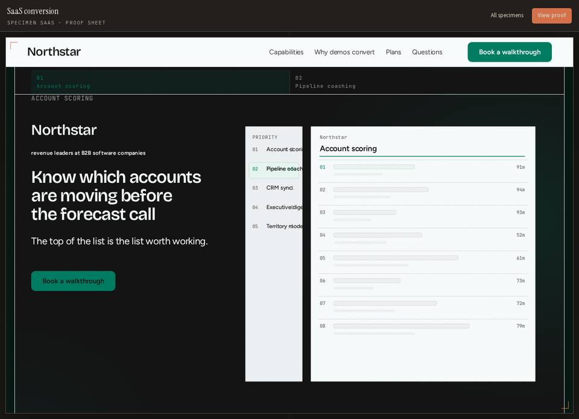
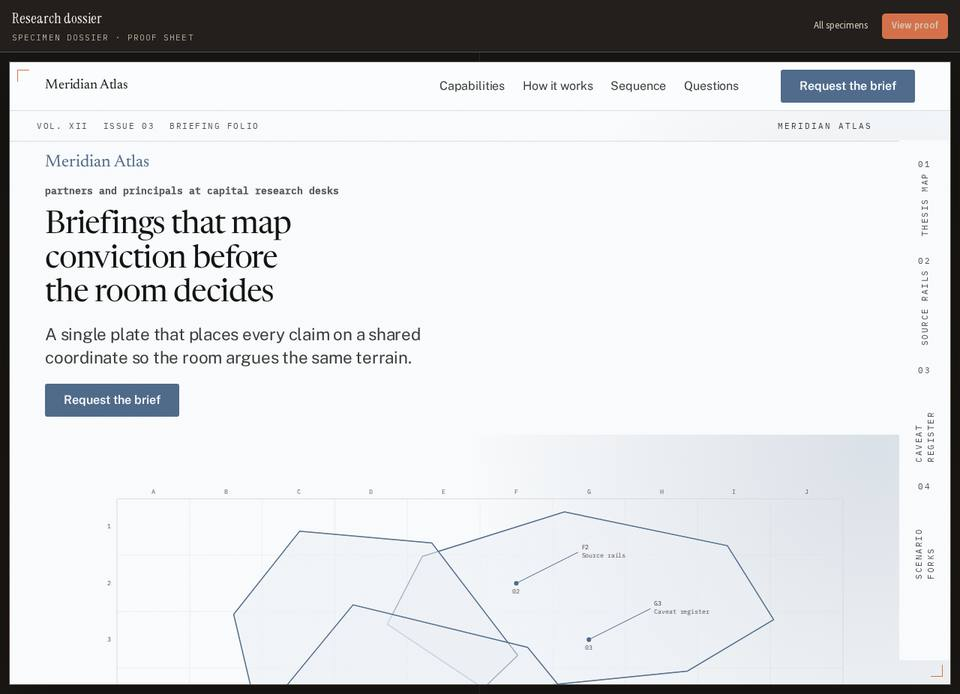
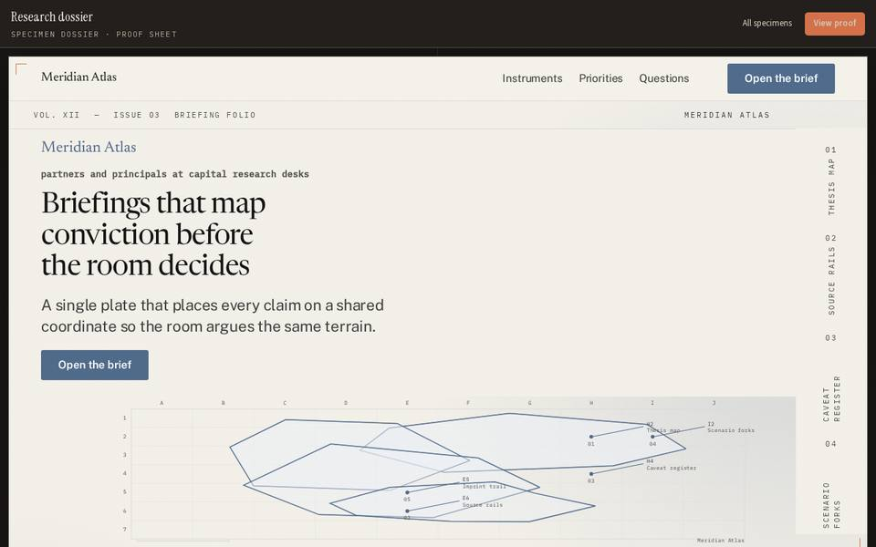

Why Generated Sites Score 3.2–4.7 / 10 vs Awwwards SOTD 7.6–7.9
Core Verdict: DesignProof's generator (packages/design-skills/src/staged.ts#L4-L12) is a deterministic rulebook with no model in the loop, no media slot on SectionSpec (types.ts#L578-L618), and ~30 self-drawn SVG line diagrams instead of photography. Meanwhile, forensics.ts#L606 counts svg the same as img/video/canvas, so pages with zero photos pass internal bands while scoring 3.2–4.7 / 10 on the Awwwards 40/30/20/10 rubric.
Diagram (a): Current Pipeline — 8 Stage Labels Over 1 Deterministic Pass
Visual Evidence: Extracted PR #105 Screenshots & Showcase Specimens

Evidence #1 · PR #105 SaaSNorthstar SaaS sample at 1280px (`c1e2435`): hero visual is grey skeleton bars and a drawn schematic with zero photography.

Evidence #2 · Dossier Before`#97 research-dossier` before rebuild (`4.3/10` Awwwards score; repeat score `309 → 100`).

Evidence #3 · Dossier Rebuild S5Rebuilt `research-dossier` (`after6`): S5 Imagery produced a line-drawn polygon SVG plate instead of real imagery.
 #102 keel (4.7/10)
#102 keel (4.7/10)Keep as base of developer-tool concept (`BIM-192`).
 #98 harness (4.3/10)
#98 harness (4.3/10)Merge ideas into `keel` (`BIM-180`).
 #101 lantern (3.9/10)
#101 lantern (3.9/10)Keep as dark visual direction only (`BIM-190`).
 #95 loom (3.4/10)
#95 loom (3.4/10)Proposed Drop (`BIM-177`); photos disabled in `figures.ts:2887`.